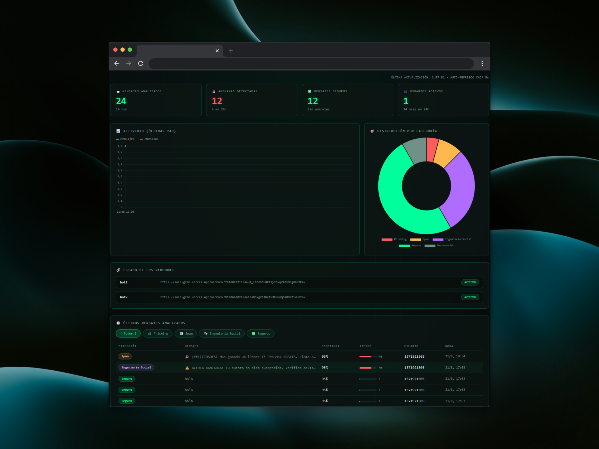
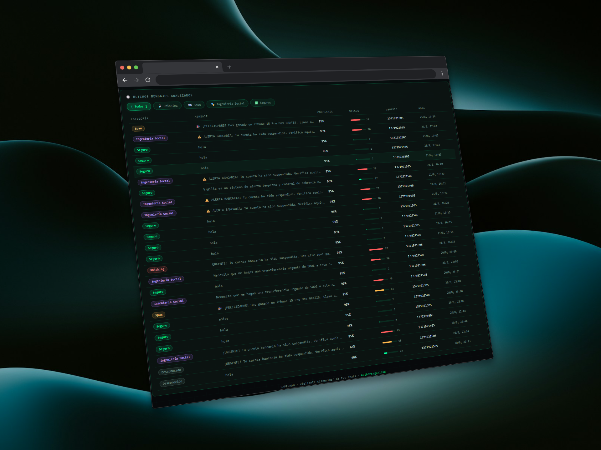
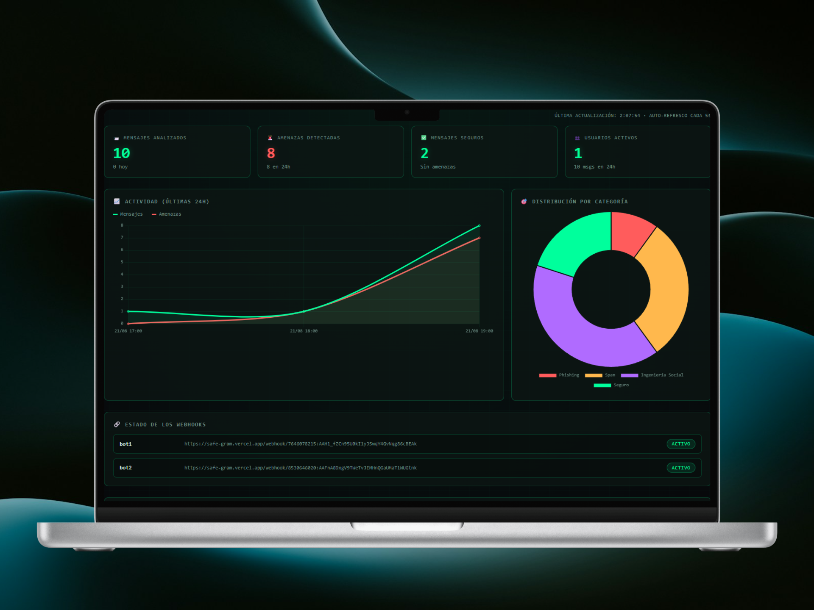

SafeGram
Sistema de ciberseguridad inteligente para Telegram, WhatsApp y Slack

SafeGram actúa como un vigilante silencioso: analiza cada mensaje en tiempo real y frena phishing, spam e ingeniería social antes de que un empleado pueda interactuar con ellos. Usa una triple capa de análisis: IA (LLM) para la clasificación semántica, heurísticas deterministas como filtro rápido y feeds de inteligencia de amenazas (URLhaus, PhishTank, Google Safe Browsing) como evidencia objetiva.
- Multi-plataforma: Telegram, WhatsApp y Slack
- Dashboard web multi-bot con métricas en MongoDB
- Alertas a administradores + modo silencioso
- Serverless en Vercel o VPS con Docker Compose
- Rate limiting, caché y fallback a heurísticas

